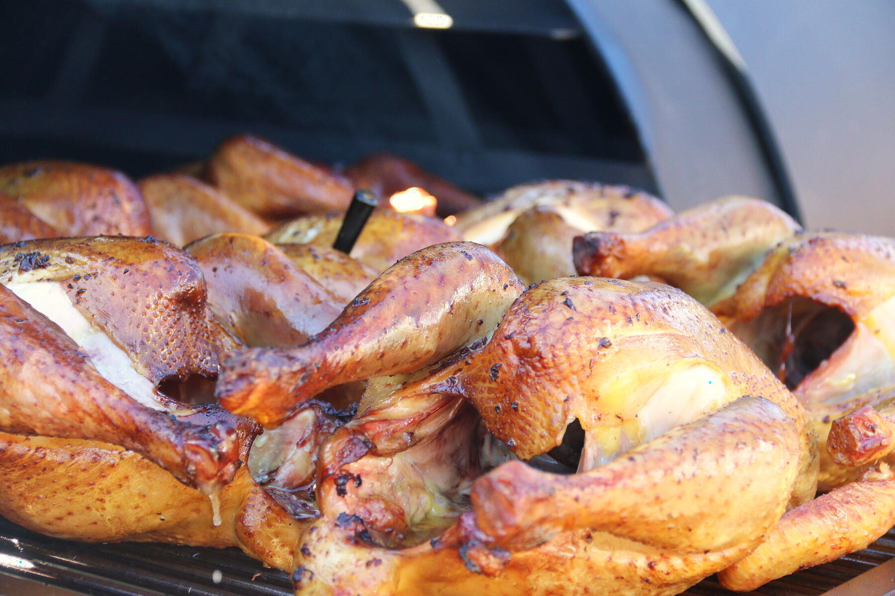
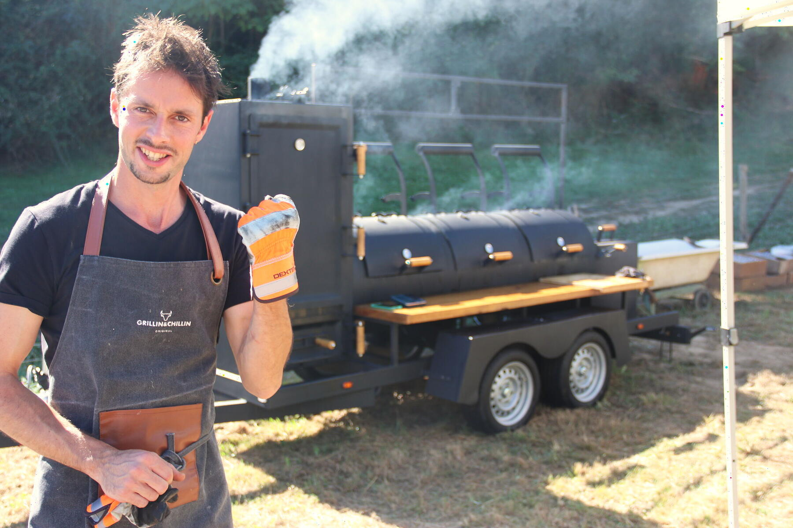
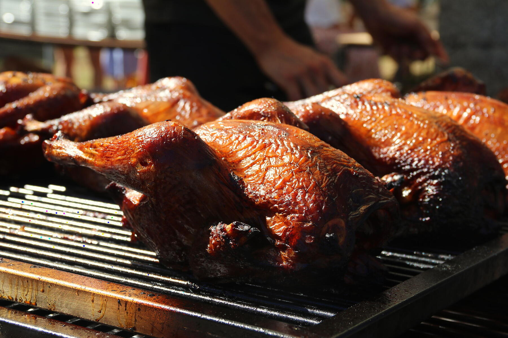
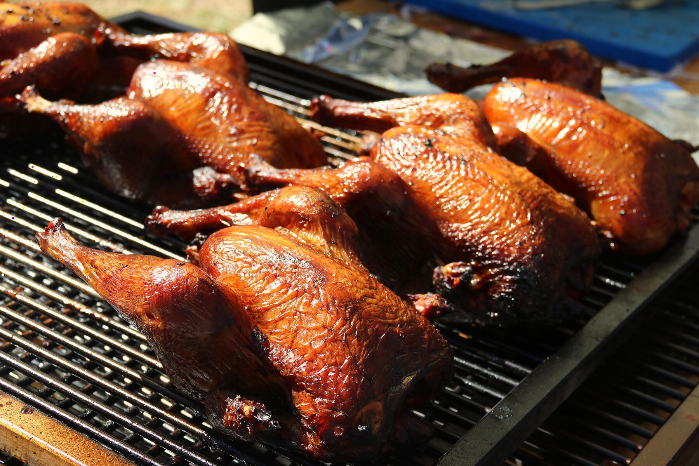

La fête de village
- Épaule de porc effilochée
- Poulets fumés entiers
- Gratin dauphinois
- Salade de chou croquante
- Sauce barbecue maison et pain
Jusqu'à 400 invités. Cuit au bois, sur place, par un chef.
Mika Bon arrive avec son smoker sur remorque. La viande fume toute la journée au milieu de votre fête, puis il la découpe devant vos invités. Pays basque et tout le Sud-Ouest.
Sur devis, réponse sous 48 h.

Sous les tentes, au milieu des vignes ou dans le pré d'une ferme : la remorque cuit pour toute la tablée d'un coup. Pas de cuisine à installer, pas de plats qui refroidissent. Vous recevez, Mika s'occupe du feu.


14 heures de bois.
Le gras fond, la fibre lâche.
Ça se détache tout seul.

Pendant des années, il a cuisiné chez les gens, pour leur table. Chaque assiette devait être juste. Il garde ce réflexe quand il sert 400 couverts.
La viande fume des heures, et ce qui l'accompagne compte autant. Tout est fait maison.

Vous ne voyez qu'une partie du travail. Voici le reste.

La remorque arrive et se cale sur une place plane. Le feu de bois démarre.

Ça fume. Les grosses pièces cuisent lentement, à basse température. Vous ne vous occupez de rien.

Les invités viennent voir. On ouvre le fumoir, on montre les canards. Les photos se font souvent là.

Découpe et effilochage devant tout le monde. Buffet ou assiettes servies, chaud pour toute la tablée.

On éteint, on range, on repart. Vous restez avec vos invités.



Un repas dont vos invités parlent encore le lendemain. La découpe devant eux, les canards laqués, des assiettes chaudes pour tout le monde.

Séminaires, fêtes du personnel, journées clients. Le buffet se monte en ligne et le service suit le rythme, même pour plusieurs centaines de personnes.

Le format des grandes tablées. Un repas chaud pour tout le village, sans cuisine à monter ni bénévoles aux fourneaux.

Dès que la famille est nombreuse. Le menu se cale sur les goûts de chacun, les enfants compris.
Le smoker fume surtout pendant la cuisson, dans la journée. On place la remorque avec vous, à l'écart des tables et sous le vent. Au moment du repas, il reste surtout l'odeur du bois, et en général les invités viennent la chercher.
La remorque cuit par tous les temps. Il faut seulement un abri pour le buffet et les tables : tente, préau ou grange. Mika vous aide à prévoir la bonne disposition.
Oui. Légumes fumés, gratin, salades et sauces maison font un vrai repas. Indiquez les régimes et les allergies dans votre demande : le menu s'adapte.
Les enfants mangent la même chose, en portion plus petite et sans piment. Le porc effiloché et le gratin font souvent l'unanimité.
D'une place plane pour la remorque et d'un accès pour un véhicule qui tire une remorque double essieu. La cuisson se fait au bois. Pour l'eau et l'électricité, on en parle selon le menu.
Le plus tôt possible pour un samedi entre mai et septembre. Pour une date proche, demandez quand même : vous avez une réponse sous 48 h.
Le prix dépend du nombre d'invités, du menu et du service (buffet ou assiettes). Envoyez votre demande : vous recevez un devis détaillé sous 48 h.
Quatre informations suffisent pour un premier devis. Réponse sous 48 h.